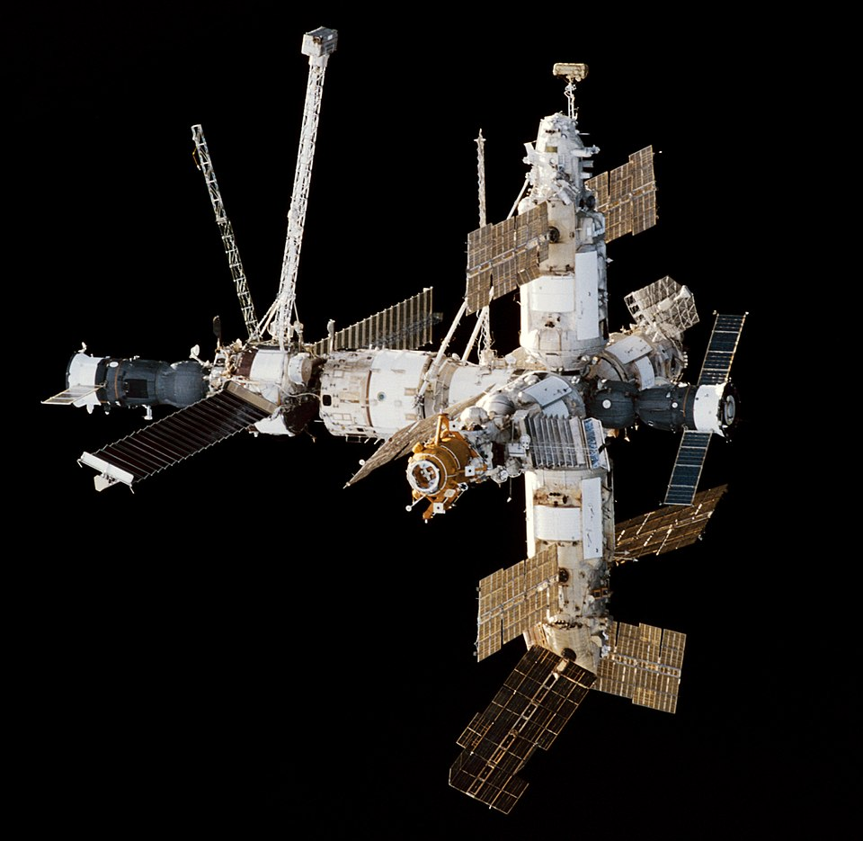

Crew dynamics & psychology — Mir crises, ISS protocols, isolation
Most of what we know about humans-in-space psychology was learned on Mir between 1986 and 2001. Fifteen years, 28 expeditions, four near-loss events, and a permanent shift in how every space agency thinks about crew composition.
Salyut 6 (Soviet, 1977-82) was the first station with deliberate long-duration crews, and the first to encounter the psychological problem that every subsequent long-mission station has had: at roughly 4-6 weeks into a mission, even highly-screened crews enter a phase Soviet psychologists called *asthenia* — fatigue, irritability, withdrawal from communication with ground, declining motivation. It was first attributed to physical deconditioning but became clear during Salyut 7 + Mir that it's primarily psychological — the novelty of orbit wears off, the work becomes routine, the crew is acutely aware they can't leave for another 5 months, and the relationship with ground control turns adversarial. Soviet ground controllers used to deliberately schedule unstructured personal time + family video calls + occasional surprise resupply gifts (chocolate, fresh fruit) as countermeasures; the practice is now standard on ISS + Tiangong + every analog station.
Mir's 1997 was the formative year. In February, a Vika oxygen-generation candle caught fire in the Kvant-1 module — flames roared for ~14 minutes through the corridor connecting Mir's modules to the Soyuz lifeboats, blocking the escape path. The two-cosmonaut + one-NASA-astronaut crew (Tsibliyev, Lazutkin, Linenger) put on respirators and fought the fire with extinguishers in zero-g (which is harder than it sounds; the extinguisher's reaction mass kicks the operator backward). They prevailed but the cabin was full of toxic smoke for days. Four months later (June 1997), a manual remote-controlled Progress docking went wrong — the unmanned cargo ship struck the Spektr module at 1 m/s, puncturing the hull. Tsibliyev and Lazutkin sealed Spektr in 11 minutes (the hatch had to be wired closed because cables ran through the bulkhead), preventing total station loss. After both events the same crew remained on station until the regular crew rotation. Linenger's memoir + the post-mission psychiatric debriefs documented severe cumulative stress, withdrawal, and conflict between the cosmonauts and ground control over operational decisions.
ISS Expedition 1 (Shepherd-Krikalev-Gidzenko, 2000-01) was the first true international long-duration crew. The protocol stack — daily ground-uplink schedule, mandatory rest periods, weekly private psychiatric conferences (PPCs) with a flight surgeon, mandatory family video calls — was designed from the Mir lessons. The interpersonal model is closer to a small-team submarine than to a corporate office: clear authority but flat decision-making in non-emergency contexts; structured conflict resolution (a problem is discussed, voted on if disagreement persists, deferred to commander if still disagreement); active management of personality friction by ground (a crew member who's not getting along with another can be paired on tasks with a third). Every multi-national crew since Expedition 1 has had English as the common operational language (NASA-Russian crews use Russian for Russian-segment operations, English for joint operations); Chinese-American direct cooperation remains operationally constrained by the Wolf Amendment, but the ISS-Tiangong operational profile has converged on similar communication protocols anyway.
Tiangong's crew dynamics are constructed differently. Single-agency means all crew are PLA-officer-status with similar military-rank backgrounds; the hierarchy is more vertical than ISS, with the commander having more unilateral authority. Shenzhou 13 (Zhai-Wang-Ye, 2021-22, Tiangong's first 6-month crew) reported in post-mission debriefs that the unified operational language + shared training background + same-agency authority chain reduced the international-translation friction that ISS crews experience but added a different friction (peer-conflict resolution between same-rank colleagues was reportedly harder than peer-conflict resolution between cross-agency colleagues with different bosses). The CMSA-internal psychological screening criteria emphasise collaborative behaviour even more strongly than NASA's, partially because the architecture's vertical authority doesn't have the cross-agency safety-valve that ISS provides.
Mars-class missions are the open psychological problem. The 26-month minimum-energy mission profile means crews are in confinement for ~33 months including transit + surface + return. The ground-to-vehicle round-trip-light-time grows from <0.1 second (Moon) to 4-24 minutes (Mars); real-time conversation with family + mission control is impossible for most of the journey. The cumulative stress modelling is largely extrapolated from analog campaigns (HI-SEAS Hawaii, Roscosmos SIRIUS in Moscow, MARS-500 in Moscow — the latter was 520 simulated days of crew isolation, with notable interpersonal conflict patterns by day ~200). The conservative architecture assumption is that a Mars crew needs ~7 people (not 6) for redundancy under acute behavioural-health events; the lossy assumption is that AI / autonomous medical support + procedural-skill expansion can compensate for loss of real-time ground psychological support. Neither has been validated. The first crewed Mars mission will be the first long-distance space-isolation experiment ever conducted with stakes high enough that failure is non-recoverable.

SEE IN THE APP
- /missions ISS expeditions (Expedition 1, 2000 → current), Mir expeditions (especially EO-23 / EO-24 / EO-25 in 1997 covering the fire + collision), long-duration analog campaigns
- /iss Modular international architecture — multi-national crews working together is the operational norm now, but it was hard-won
- /tiangong Single-agency station — the comparison case to ISS's international model
LEARN MORE
- intro NASA · Behavioral Health and Performance
- core NASA Technical Reports · Lessons from the Soviet/Russian Crewed Spaceflight Program (NASA SP-2004-571)
- core Patricia Santy · Choosing the Right Stuff (1994 — astronaut psychology overview)
- deep Wikipedia · Effect of spaceflight on the human body — psychology